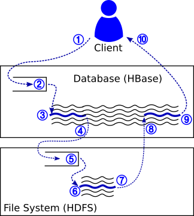

Adding Baggage to your System
Introduction
This tutorial gives an overview of how to instrument your distributed system to add Baggage propagation. The goal of this tutorial is to get an understanding of what Baggage is and isn't, how it works under the covers, and what effort is required on the part of system developers to add Baggage to their systems.
We will also show a few examples of patterns for Baggage propagation, and end with recommendations for how to tackle instrumentation for a new system.
Overview: End-to-End Tracing
First, consider an example, illustrated in the diagram below. Here, we show a distributed database system, HBase (similar to Google's BigTable), and a distributed file system, HDFS (similar to the Google File System). HBase runs web servers on many machines. Each machine can receive remote procedure calls (RPCs) issued by clients (①). Clients can, for example, read or write data to database tables. Incoming requests will be queued up (②) and eventually processed by one of a set of worker threads (③). In order to process the request, HBase must read or write data from a database table, which is actually stored in the distributed file system. HBase issues an RPC request to HDFS (④); like HBase, incoming requests to HDFS are queued up (⑤) and eventually processed by a set of worker threads (⑥). Upon completion, HDFS responds to HBase (⑦); HBase processes the response (⑧) and then sends its own response back to the client (⑨, ⑩).

When we talk about the end-to-end execution of a request, we mean the full path of the request starting from the client, going through HBase and HDFS, and returning back to the client.
Baggage
The goal of Baggage is to provide a per-request container of key-value pairs that follows a request's execution. The goal is to allow any component along the path of the request to add key-value pairs to the baggage; those key-value pairs will then be propagated alongside the request wherever it goes in future. For example, when the request executes in HBase, we might want to add the key-value pair "User": "Jon" to the request's baggage. If so, then we want this key-value pair to subsequently be accessible when the request arrives at HDFS; when it returns to HBase after processing at HDFS completes; and even at the client when HBase returns its final response.
Baggage propagation is challenging because we do not know how to easily automate it. It requires developers to go in to the source code of the system and make changes to support Baggage. For example, the RPC call from the client to HBase, and in the RPC call from HBase to HDFS, the wire format of the call must be modified to now include Baggage, and the source code of the servers must be modified to serialize and deserialize baggage. In the thread pools and request queues in HBase and HDFS, baggage must be included in the request context that is queued up.
Our implementation of Baggage aims to make it as easy as possible for developers to add instrumentation to their system. This tutorial goes over some common patterns and how to instrument them with the Baggage API.
1. Active Baggage
For now, we assume that at any point in time, a thread is only doing work for one request. For example, the worker threads in the HDFS and HBase illustration each only process one request at a time. However, multiple threads could be processing different requests concurrently, and a single thread might process many requests one-by-one during its lifetime.
Each thread has an active baggage stored in a thread-local variable which corresponds to the baggage for the request currently being executed by that thread. Baggage is implicitly present and empty by default; no initialization is required to start interacting with the current thread's baggage. The Baggage interaction API (see Baggage) provides the means to add, remove, and manipulate the key-value pairs stored in a thread's active baggage.
Discarding Baggage When execution for a request completes, the active baggage for the thread might need to be discarded. For example, a worker thread might implement a simple loop that dequeues from a queue of request contexts. In this scenario, the active baggage must be discarded (①) when each request completes execution:
class MyThreadPool {
BlockingQueue<RequestContext> requestQueue;
class RequestContext {
...
}
public void enqueue(RequestContext request) {
requestQueue.add(request);
}
public void workerThreadMain() {
while (!Thread.currentThread().isInterrupted()) {
RequestContext currentRequest = requestQueue.take();
this.processRequest(currentRequest);
+ Baggage.discard(); // ①: Baggage is discarded when request finishes processing
}
}
}2. Passing Baggage Between Threads
Requests rarely have single-threaded execution; instead, many systems use multiple threads, queues, thread pools, callbacks, and other asynchronous execution mechanisms. For all of these, Baggage must be correctly propagated alongside the request.
Attaching Baggage to Contexts Often, threads enqueue request contexts (or similarly, callbacks) into queues to be executed. When this happens, Baggage must be included with the request context, so that the worker thread can resume the request's baggage. In the following example code, we add a DetachedBaggage field to the RequestContext class (②), we save the baggage with requests when they are enqueued (③), and resume the baggage of a request when it is dequeued (④):
class MyThreadPool {
BlockingQueue<RequestContext> requestQueue;
class RequestContext {
+ DetachedBaggage baggage; // ②: add a field to store baggage with request context
...
}
public void enqueue(RequestContext request) {
+ request.baggage = Baggage.stop(); // ③: save baggage when we enqueue a request
requestQueue.add(request);
}
public void workerThreadMain() {
while (!Thread.currentThread().isInterrupted()) {
RequestContext currentRequest = requestQueue.take();
+ Baggage.start(currentRequest.baggage); // ④: restore baggage when we resume the request
this.processRequest(currentRequest);
Baggage.discard();
}
}
}Request Branching Sometimes, an execution splits into multiple concurrent branches. For example, a request might enqueue multiple request contexts (⑤), such as the following:
class FanOutRequest {
public void processFanOutRequest() {
...
for (int i = 0; i < 10; i++) {
threadPool.enqueue(new ChunkRequest()); // ⑤: enqueue multiple concurrent requests for concurrent processing
}
...
}
}When an execution splits like this, it is insufficient to use Baggage.stop() in our enqueue method, because then only the first request we enqueue would have meaningful baggage. Instead we must use Baggage.fork(), which will create a copy of the baggage. Now, every request enqueued will have its own baggage:
class MyThreadPool {
...
public void enqueue(RequestContext request) {
+ request.baggage = Baggage.fork(); // ⑥: fork current baggage when we enqueue instead of stopping, because we might not be finished in the current thread
requestQueue.add(request);
}
...
}Creating New Threads Another example of when we need to copy baggage is if a request creates a new thread. When that happens, the first thread must make a copy of its current baggage (⑦) and save it in a field accessible to the second thread (⑧). When the second thread starts execution, it activates the baggage given to it by the first thread (⑨):
class MyLongRequest {
class SecondaryThread {
+ DetachedBaggage baggage; // ⑧: second thread has field for storing creator's baggage
@Override
public void run() {
Baggage.start(baggage); // ⑨: second thread activates baggage when it begins executing.
...
}
}
public void processRequest() {
...
+ SecondaryThread second = new SecondaryThread();
+ second.baggage = Baggage.fork(); // ⑦: first thread copies its current baggage
+ second.start();
...
}
}3. Merging Baggage
Sometimes, a request that has branched into multiple concurrent executions then merges back into a single execution, for example, when a thread joins. When this happens, there will be multiple copies of baggage from different branches of the exeuction. More importantly, after the branches merge, we need the resulting baggage to contain all the contents of all the baggage from all branches!
Consider the previous example again. Now, the secondary thread rejoins again.
class MyLongRequest {
class SecondaryThread {
DetachedBaggage baggage;
DetachedBaggage endBaggage;
@Override
public void run() {
Baggage.start(baggage);
...
endBaggage = Baggage.stop();
}
}
public void processRequest() {
...
+ SecondaryThread second = new SecondaryThread();
+ second.baggage = Baggage.fork(); // ⑦: first thread copies its current baggage
+ second.start();
...
}
}